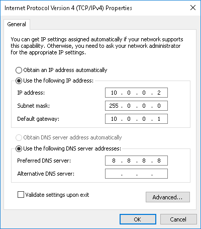

Access#
Screen, keyboard, mouse#
Plug your screen, keyboard and mouse in the pi and power it up.
Note
The default setting for the keyboard is QWERTY.
VNC#
VNC is a network protocol which allows you to remotely control the desktop screen of your device.
Configure#
install vnc-server and vnc-viewer
sudo apt install realvnc-vnc-server realvnc-vnc-viewer
enable vnc
Open raspberry configuration
sudo raspi-confignavigate to
Interfacing optionsselect
vnc→Yes
Usage#
Download VNC-viewer on your local machine
Add a new connection:
File→New connectionorCTRL+Nconnect
SSH#
SSH stand for secure shell and is a network protocol for a command-line interface to your desired device.
Internet#
WIFI setup: add file
wpa_supplicant.confto the boot folder or/etc/wpa_supplicant/wpa_supplicant.confon the pi syntaxDirect ethernet connection:
add
ip=10.0.0.1to the long line ofcmdline.txtof the boot folder or/boot/cmdline.txton the piSet IP of PC 1. Navigate on your Windows 10 to
Control Panel→Network and Internet→Network and Sharing Center→Change adapter settings2. Right-clickEthernetand selectProperties3. Double-clickInternet Protocol versie 4 (TCP/IPv4)4. Configure connection 
Preconfigure#
Add file
sshto the boot folder (no extension, no contents).WIFI setup: add file
wpa_supplicant.confto the boot folder syntax
Configure#
Enable SSH
Open raspberry configuration
sudo raspi-configNavigate to Interfacing options
Select SSH → Yes
Usage#
On another computer, type in command line:
ssh pi@IP_ADDRESS
The pi will ask for a password, the default is raspberry.